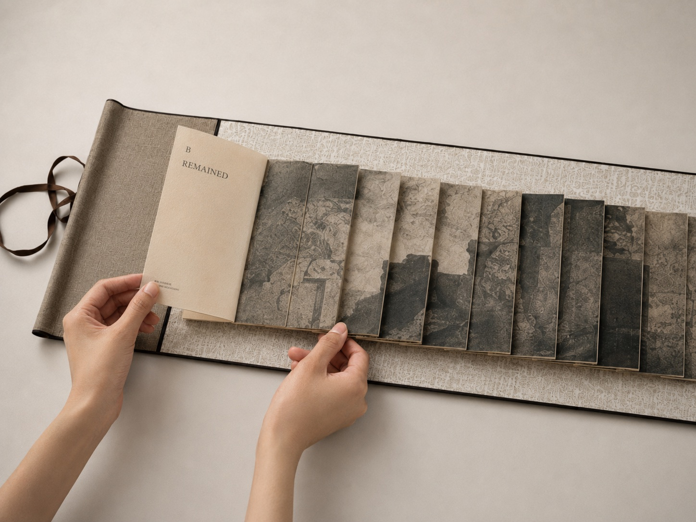

CURRENT PRACTICE / 01
BEIJING ORDERS
Completed spatial-translation pilot
Three artist books · Dragon-scale binding · Material and spatial translation

Project
Introduction
Beijing Orders is a series of three horizontal artist books developed from embodied encounters with Beijing’s architectural and historical order. Rather than documenting particular sites, the project extracts relations experienced through movement: axial return, repetition, thresholds, hierarchy, concealment and revelation.
These relations are translated into layered pages, interrupted images and sequential unfolding through dragon-scale binding. The three books—Placed, Remained and Opened—explore how order situates the body, persists through material traces, and becomes perceptible through acts of opening.
01
OBSERVING ORDER
The project began with field observation and sketchbook studies across the Forbidden City, Beijing’s central axis, the Summer Palace and Yuanmingyuan. I became interested not only in architectural form, but in how order was encountered bodily: through repeated gates, controlled routes, symmetrical structures, material surfaces and moments of partial visibility.
02
FROM SITE TO RELATION
The sketchbook became a space for separating perceptual relations from their original locations. Axes, repetitions, thresholds, surfaces and residual marks were redrawn, compared and reorganised. This process shifted the project from representing Beijing towards translating the organising relations encountered within it.

03
WHY DRAGON-SCALE BINDING
Dragon-scale binding was selected not simply as a historical reference, but as an operative structure. Its overlapping leaves produce continuity and interruption at the same time. The reader must touch, lift, reveal and return; visibility is controlled through sequence, duration and bodily movement.
The book therefore operates as a small spatial system, translating architectural relations into layered material and embodied reading.


04
THREE ARTIST BOOKS
BOOK 01
PLACED
Developed from encounters with axiality, symmetry, gates and ceremonial movement, Placed considers how spatial order positions and directs the body.

BOOK 02
REMAINED
Drawing from stone, walls, patterns, architectural surfaces and accumulated marks, Remained explores how order persists after its original context has receded.

BOOK 03
OPENED
Emerging from ruins, light, absence and partial visibility, Opened considers how historical order is encountered through acts of revealing and withholding.
05
MATERIAL ENCOUNTER
The work is encountered through unfolding rather than viewed as a fixed image. Layered leaves reveal and conceal different parts of the composition, making reading dependent on the movement of the hand, the duration of attention and the changing relation between image and structure.



06
CURRENT INQUIRY
Beijing Orders is complete as a formal and material pilot. It demonstrates how embodied spatial relations can be translated through book structure, layering and handling. What remains untested is how different readers perceive these translated relations—what remains legible, what is transformed or lost, and what new experiences are generated through the act of translation. These questions continue into my current research.